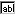

Regular Expression Renames


|
Regular Expression Renames |
|
|
In a Folder Compare session you can rename a group of files or folders all at once using Perl-compatible Regular Expressions. In a Folder Compare session, select two or more files with different names, and select Rename  from the Actions menu. In the Rename dialog select Regular expressions. In the Old mask field, enter a regular expression that is matched against the original filename. In the New mask Field, enter a template used to generate a new filename. A template is the expression used with the regular expression defined in the old name field to create a new filename. Example - Partial Name Change: If "ABCDEF" is the file name, and you want to change "CD" to "HJ", enter "CD" in the Old mask field and "HJ" in the New mask field. The new filename will be "ABHJEF". Example - Complete Name Change: If "Beyond" is the file name, and you want to change it to "Scooter", enter ".*" in the Old mask field and "Scooter" in the New mask field. You can also change the filename by entering "Beyond" in the Old mask field and "Scooter" in the New mask field. However, for simple renames, it's easier to use the DOS compatible option. Example - Changing a group of filenames If you have a group of text files with six-letter names, and you want to swap the first three and the last three letters, enter "(...)(...).txt" in the Old mask field and "$2$1.txt" in the New mask field. In this case, "beyond.txt" becomes "ondbey.txt". Another example is if you have a group of music files that are titled "Artist-Song" and you want to change them to "Artist - Song", enter "-" in the Old mask field and " - " in the New mask field. |